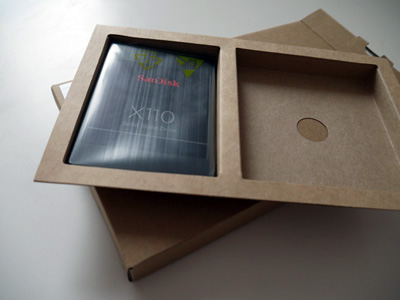
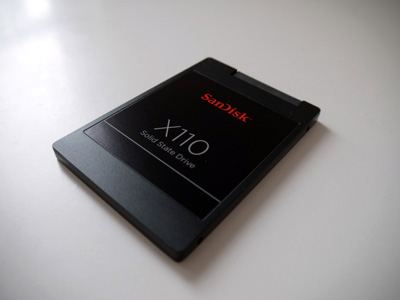
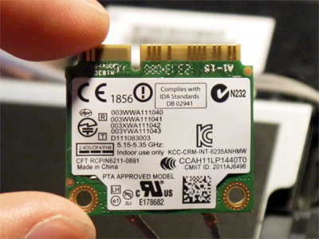
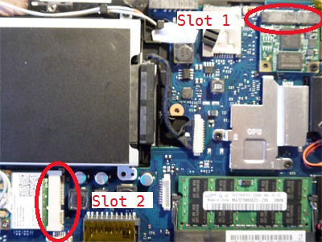
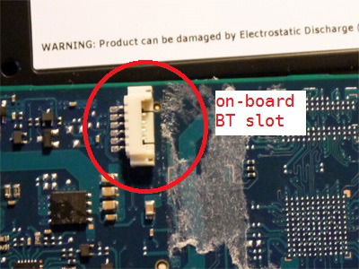
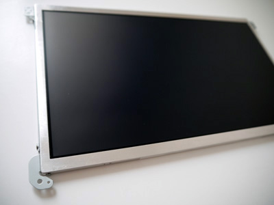
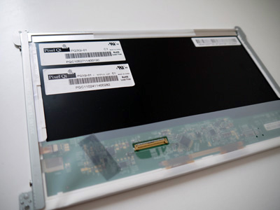
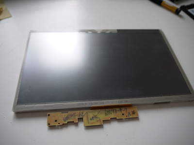
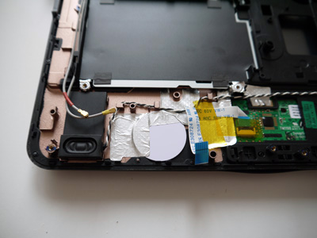

Arcadia
Keep It Stupidly SimpleSAMSUNG NB30 MOD (Part 1: Hardware)
Return to index HERE
Since my daily laptop (HP 8540W) is kinda heavy to carry around, I got myself a Netbook (SAMSUNG NB30 Touch). You might say, who the hell still buys Netbook today. Well, for starters, they are cheap, small and easy to carry. And, from the application point of view, it is X86 based, so I can easily run tons of windows applications or write my own. Also, its modularized body makes it very easy to upgrade or repair. Then I decide to MOD my NB30 to make it more powerful.
First, a little intro to the NB30 touch version. The NB30 model actually has several sub variants, some has built-in 3G module, some has touch screen, mine has both. Also, it has ATOM450 1.66GHz CPU, 1GB DDR2 RAM, 250GB HDD, 10.1 inch screen and Intel GMA 3150 GPU. Other stuff like Wifi, Ethernet are just like other computers.
Well, here comes the main topic. It took me a while to come up with the following upgrade table, basically everything that is upgradable is in the table.
| Module | Original Module | Upgrade Candidate |
| RAM | SAMSUNG 1GB DDR2 | SAMSUNG 2GB DDR2 PC2-5300 |
| HDD | 250GB HDD | Sandisk X110 128GB SSD |
| WiFi | Atheros AR9285 Network Adapter | Intel Centrino Advanced-N 6235 |
| 3G | SAMSUNG GT-Y3300 | Broadcom CrystalHD BCM70015 |
| Bluetooth | Broadcom BCM2070 Bluetooth 3.0 | Intel Bluetooth 4.0 |
| Screen | 10.1" 1024x600 LED | 10.1" 1024x600 Pixel Qi Screen |
| Keyboard | DE Layout | UK layout |
| Battery | 4 Cell 4400mAh | 6 Cell 5900mAh |
Actually the only bottleneck of my NB30 is the CPU. If it's not soldered directly onto the motherboard, I would have upgraded it. Now let me talk a little bit of why I upgrade like this, module by module.
RAM: I looked it up, The max RAM for NB30 is 2GB DDR2. Intel seems limited the max RAM for ATOM to 2GB per channel, and my NB30 only has one channel. One example is Lenovo IdeaPad S12 nvidia version, it has 1GB soldered RAM and can support 2GB RAM in its slot, therefore has 3GM RAM capability. I know my 2GB PC2-5300 is not the best candidate here, but I don't think it will make much difference to use a better one.
HDD: The SSD is quieter, lighter, faster and more energy efficient. For the X110, the active power is 120mW, which will for sure increase the battery life of my NB30. Well, the only problem is the price, it is even more than 1TB HDD.
|  |
| X110 |
|  |
| X110 |
WiFi: The Intel Centrino Advanced-N 6235 is a dual band half-sized card with Bluetooth functionality built-in. Since it has Bluetooth, I can remove the on-board Bluetooth module and free one internal USB port for other purpose.
|  |
| Intel CAN 6235 |
There is a slight problem when I tried to install this card. I'll explain it in the Bluetooth section.
3G: I have to admit, I like the built-in 3G in my NB30. But there is another functionality I like to have in my NB30, that is HD decode. The CPU (N450) and GPU (GMA 3150) are just too weak for that. Therefore I have to use a HD decoder to do the job, which is Broadcom CrystalHD BCM70015, a half-sized mini-PCIe card. But the NB30 only has two mini-PCIe slots. I have to make a trade-off between 3G and HD decode. Since I don't travel a lot and like video a lot, I chose HD decode. Besides, I can use a USB dongle for 3G if I want.
 |
| Broadcom BCM70015 |
Bluetooth: This is the most troublesome part. It turns out that the two built-in mini-PCIe slots are not exactly the same. As shown in the picture below, the slot 1 has PCI interface, while the slot 2 has PCI interface as well as USB interface. When I put the Intel CAN 6235 card into slot 1, the WiFi works, but the Bluetooth is missing, that's because the built-in Bluetooth uses the USB interface, and it is probably the same with all WiFi BT combo card. The solution is simple, just switch the WiFi card to slot 2 and the Broadcom decoder to slot 1.
|  |
| Internal mini-PCIe slots |
According to Intel, the Bluetooth inside the Intel CAN 6235 card is Bluetooth 4.0, which consumes lower energy than normal Bluetooth adapters.
As I don't need the original on-board BT module any more, I took it out. It is for sure a USB port. After figuring out the pin-out of the slot, I can put something interesting in it, a micro-controller perhaps, a NFC reader, or a RTL-SDR device...
|  |
| Internal BT slot |
Screen: The screen would be the most interesting part of the mod. Last year I came across pixel qi screen in some news, basically they add a reflective layer in the normal LCD , so that it is readable under direct sunlight. You can find more here http://www.pixelqi.com/. Then they start selling some self-MOD kits for Netbook owners. But they are too expensive, and only available in USA. This year I am very lucky to get a cheap used one from Ebay.
There are actually 5 types of screen listed on the website, what I need is 10.1" and 1024x600 RBG, so it should be PQ3Qi-01. Earlier tests show that my NB30 supports a normal 10.1" 1280x800 LED screen module, but since I can't get my hands on one PQ101WX01, I cannot for sure decide it will work or not.
|  |
| PQ3Qi-01 (front) |
|  |
| PQ3Qi-01 (back) |
A side note for Pixel Qi, some news earlier this year says that due to many reasons, Pixel Qi abandoned the consumer market and focuses on military, government, and civil service. So I suppose we will not be able to see it on the market for some time, what a pity.
Also, it not that simple to replace the original LED panel. Because my NB30 has a touch screen glued onto it, while I was trying to remove the touch screen, I broke the glass. :-( So no touch screen for my NB30 for a while. I've searched everywhere and finally found a replacement, and will get it somewhere in Jan. next year. So if you want to do the same thing, be twice careful !!
|  |
| NB30 touch panel (impossible to get a replacement !) |
The actual comparison between the normal LCD and Pixel Qi screen will be in a separate post later.
Keyboard: Not much to say about the keyboard. It is very easy to get one and replace it. Just read the manual to do it properly and you'll be fine.
Battery: I found out that there are two types of battery for my NB30. 4 cell version and 6 cell version. Of course the 6 cell version is much better, but it is very expensive at the same time, almost twice the price. So Instead, I bought a second 4 cell battery.
Extra: I also add a NFC tag under the touch pad of my NB30 just for fun. It's a 3M waterproof NFC Tag that has 1KB memory, compatible with ISO 144432A/14443A standards. Some possible applications like unlocking android phone, sharing personal infos and security lock...
|  |
| NFC Tag |
Well, that's it for the hardware mod of my NB30 Netbook, I'll write something about the software part later. Thank you for reading my post, and hope you like it.
hosted by GitHub, 2013/Oct/22